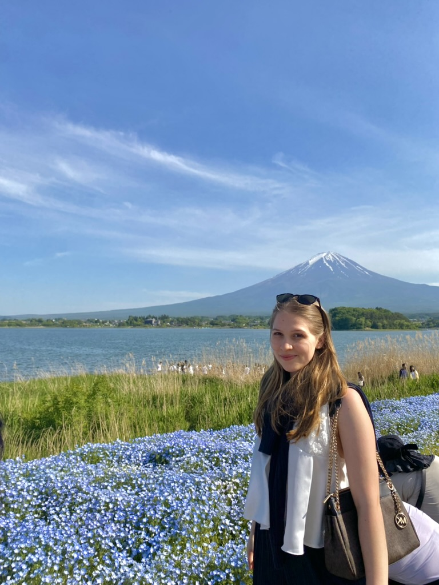

Hi everyone, and welcome to my little Japan blog!
My name is Alexandra, I'm from Germany, and I'm a passionate photographer who can never stay away from Japan for long.
What started as a single trip turned into a long-term love story. I've now been to Japan more than seven times and have lived, studied, and worked there for over a year in total. Every time I go back, it feels a bit like coming home, and I still discover something new.
I love so many things about Japan: the people, the culture, the food, and the landscapes, from neon-lit streets to misty mountains and tiny coastal towns. Photography is my other big passion, so my camera is always with me. You’ll find a lot of my favorite shots here.
Over the years, friends kept asking me, “Where should we go? What should we eat? What shouldn’t we miss?” At some point I realized I was typing the same long messages again and again, so I decided to put it all in one place. This blog is my collection of tips, favorite spots, and hidden gems, written the way I’d tell a friend over a cup of matcha.
I hope you enjoy it and that it helps you plan your own adventure!